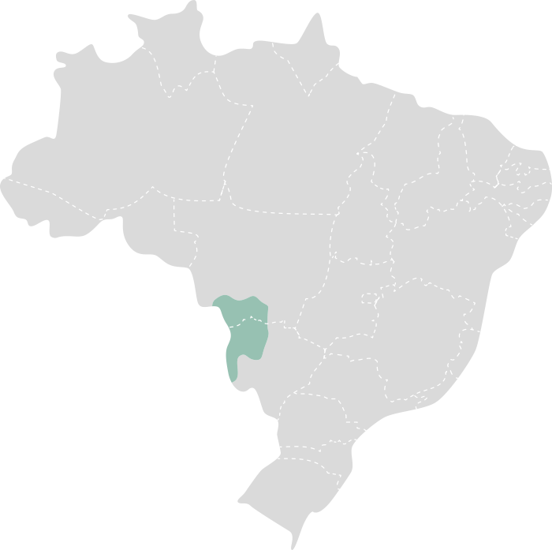

Bioma Pantanal
O Pantanal é um dos maiores e mais importantes biomas de áreas alagadas do mundo, localizado no centro-oeste do
Brasil, estendendo-se também para partes da Bolívia e do Paraguai. É conhecido por sua rica biodiversidade, suas
vastas áreas de alagamento e seus ecossistemas únicos. O Pantanal é crucial para a conservação da água e a
proteção da vida selvagem na região.

Características Principais:
-
Vegetação
- Vegetação de Campos e Áreas Alagadas: O Pantanal é caracterizado por uma vegetação
diversa
que inclui campos alagados, florestas ribeirinhas e áreas de vegetação de cerrado. A vegetação é
adaptada a
variações sazonais de inundação.
- Plantas Aquáticas: A presença de muitas plantas aquáticas, como o aguapé e a
vitória-régia,
é uma característica marcante do Pantanal. Essas plantas desempenham um papel crucial nos ecossistemas
aquáticos e em áreas inundadas.
-
Clima
- Clima Tropical: O clima do Pantanal é tropical, com uma estação chuvosa e uma estação
seca
bem definidas. As temperaturas médias anuais variam entre 20°C e 30°C.
- Precipitação: A precipitação no Pantanal varia bastante ao longo do ano, com uma média
anual entre 1.000 mm e 1.500 mm. A estação chuvosa ocorre geralmente de novembro a março, enquanto a
estação
seca vai de abril a outubro.
-
Hidrografia
- Rios e Córregos: O Pantanal é drenado por uma vasta rede de rios e córregos, incluindo
o
Rio Paraguai, que é um dos principais. Esses cursos d'água são fundamentais para a dinâmica ecológica da
região.
- Áreas de Inundação: Durante a estação chuvosa, grandes áreas do Pantanal são inundadas,
criando um ambiente rico em habitats aquáticos e semi-aquáticos. Essas áreas são vitais para a fauna e
flora
local.
-
Biodiversidade
- Fauna: O Pantanal abriga uma incrível diversidade de espécies, incluindo o jaguar, a
capivara, o tuiuiú e a arara-azul. É um dos melhores locais para observar a vida selvagem devido à sua
visibilidade durante a estação seca.
- Flora: A flora do Pantanal inclui uma variedade de plantas adaptadas às condições
alagadas,
como a buriti e a palmeira de aguapé, além de espécies de vegetação de campo e mata ciliar.
-
Importância Ecológica
- Regulação Hídrica: O Pantanal desempenha um papel vital na regulação dos ciclos
hidrológicos da região, ajudando a absorver e liberar água de maneira controlada e mantendo a qualidade
da
água.
- Habitat para Espécies: É um habitat crucial para muitas espécies de plantas e animais,
algumas das quais são endêmicas e ameaçadas de extinção.
-
Ameaças
- Desmatamento e Agricultura: O avanço da agricultura e do desmatamento nas áreas ao
redor do
Pantanal tem impacto sobre a qualidade da água e a biodiversidade da região.
- Mudanças Climáticas: As mudanças climáticas estão alterando os padrões de precipitação
e
aumentando a frequência e a intensidade das secas, o que pode afetar negativamente o ecossistema do
Pantanal.
O Pantanal é um bioma de importância global, oferecendo serviços ecológicos essenciais e abrigando uma rica
biodiversidade. A conservação deste ecossistema é crucial para manter o equilíbrio ambiental e proteger a vida
selvagem que nele habita.